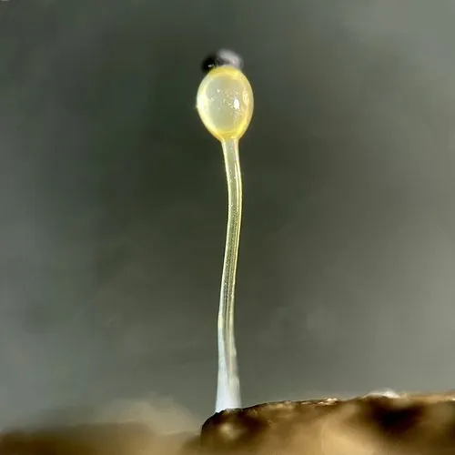

真菌 · 真菌界
水玉霉 Pilobolus crystallinus

水玉霉科粪生真菌，孢子囊晶莹如水晶，能把孢子囊喷射两米远，是研究真菌快速运动的经典模式生物。
- 分类
- 门毛霉门纲毛霉纲目毛霉目科水玉霉科属水玉霉属
- 栖息环境
- 草食动物粪便上，向光生长，雨后迅速发生
- 地理分布
- 世界温带至热带广布，中国各地牧场与草地常见
- 保护级别
- 暂无评估；随畜牧业广泛分布
物种志
水玉霉的菌体由无色透明的孢子囊梗与黑色孢子囊组成。孢子囊梗直立，高 0.5–2 厘米，顶端膨大形成充满液体的泡囊，泡囊上托着黑色、直径约 0.2 毫米的孢子囊，整体晶莹透明，形似一枚小水晶。孢子囊内孢子暗褐色，光滑。
水玉霉生于草食动物的粪便上，是典型的粪生真菌，春夏秋雨后迅速发生，从孢子到成熟只需数天。它的泡囊能感受光线方向，向光弯曲，使孢子囊对准阳光；成熟时泡囊内压力骤增，把孢子囊连同黏液一起射向光源，射程可达 1–2 米，黏附在草叶上，随牲畜取食进入消化道，完成生活史。这一“向光喷射”机制是生物力学与真菌传播研究的经典模型。它不食用，也不对人致病。
形态与习性
- 菌体孢子囊梗透明，高 0.5–2 厘米
- 孢子囊黑色，直径约 0.2 毫米，托于透明泡囊上
- 孢子印暗褐色，孢子光滑
- 生境草食动物粪便上，雨后迅速发生
- 传播向光喷射孢子囊，射程可达 1–2 米
- 食用性无食用价值，粪生基质不可入口
趣味知识
- 水玉霉能把孢子囊射出 1–2 米，加速度超过 20000 倍重力，是自然界最快的发射之一。
- 它的泡囊像一枚透镜，能感知光线方向，把孢子囊精确对准阳光。
- 孢子囊黏附在草叶上，被牛羊吃下后随粪便排出，完成“粪便—草—粪便”的循环。
- 因为运动过程透明可见，它成为研究细胞压力与快速运动的模式生物。